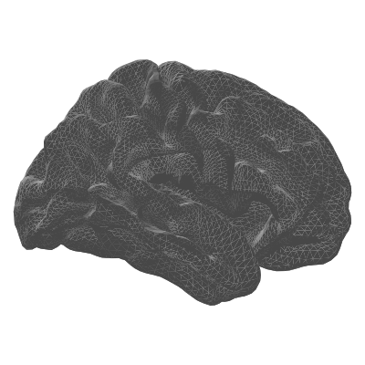
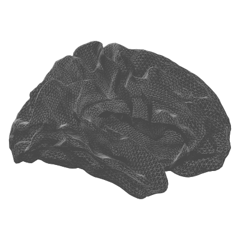
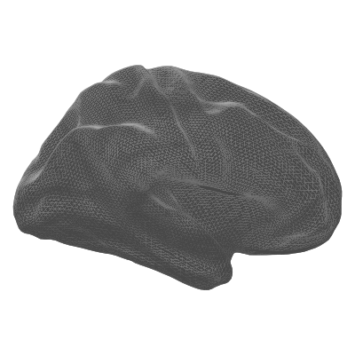
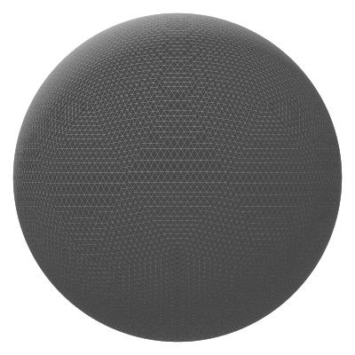
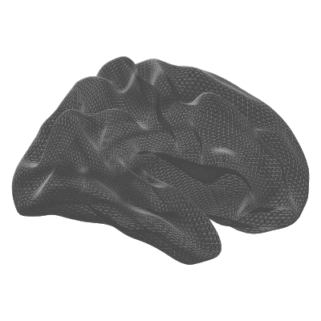
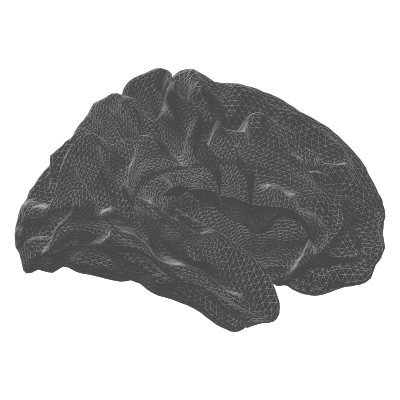
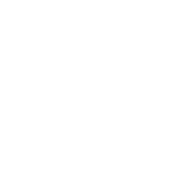

The ggseg ecosystem uses brain surface meshes to render atlas parcellations in 3D. The core packages ship with the inflated cortical mesh (in ggseg.formats) and the SUIT 3D pial cerebellar mesh. ggseg.meshes extends this with additional surfaces for both cortical and cerebellar visualisation.
Available surfaces
Cortical
All cortical meshes are fsaverage5 resolution: 10,242 vertices and 20,480 triangular faces per hemisphere.
available_cortical_surfaces()
#> [1] "pial" "white" "semi-inflated" "sphere"
#> [5] "smoothwm" "orig"| Surface | Description | Use case |
|---|---|---|
| pial | Grey matter / CSF boundary | Anatomically accurate rendering |
| white | Grey / white matter boundary | White matter surface visualisation |
| semi-inflated | 35/65 blend of white + inflated | Compromise between anatomical accuracy and visibility |
| sphere | Spherical registration surface | Surface-based registration, QC |
| smoothwm | Smoothed white matter | Smoother alternative to white surface |
| orig | Pre-topology-correction surface | Debugging surface reconstruction |
 |
 |
 |
| pial | white | semi-inflated |
 |
 |
 |
| sphere | smoothwm | orig |
Cerebellar
available_cerebellar_surfaces()
#> [1] "suit_flat"The SUIT flatmap is a 2D flattened projection of the cerebellar cortex with 28,935 vertices. Vertex indices from cerebellar atlases map directly to this surface since it shares the same vertex space as the SUIT 3D pial mesh in ggseg.formats (minus the 1,078 peduncular cap vertices).

Accessing meshes
Each mesh is a list with vertices (data.frame: x, y, z)
and faces (data.frame: i, j, k).
mesh <- get_cortical_mesh("lh", "pial")
head(mesh$vertices)
#> x y z
#> 1 -19.34336472 38.735958 67.220139
#> 2 -69.06122589 16.662487 61.281273
#> 3 -9.23326397 9.717618 46.580341
#> 4 43.11487198 24.019428 23.926214
#> 5 0.04929276 59.861500 8.974564
#> 6 -49.40507889 50.645546 47.813751
head(mesh$faces)
#> i j k
#> 1 1 2565 2563
#> 2 1 2563 2566
#> 3 1 2566 2568
#> 4 1 2568 2570
#> 5 1 2570 2565
#> 6 4 2575 2573
flat <- get_cerebellar_flatmap()
nrow(flat$vertices)
#> [1] 28935
nrow(flat$faces)
#> [1] 56588Integration with ggseg3d
When ggseg.meshes is installed,
ggseg3d::resolve_brain_mesh() can resolve all surfaces
provided by this package. This means you can render atlases on any
surface:
Mesh structure
All cortical meshes share the same face topology (triangle connectivity) as the inflated mesh in ggseg.formats. This means vertex indices from cortical atlases work with any surface – the same vertex index refers to the same anatomical location across pial, white, inflated, sphere, etc.
vapply(available_cortical_surfaces(), function(s) {
mesh <- get_cortical_mesh("lh", s)
c(vertices = nrow(mesh$vertices), faces = nrow(mesh$faces))
}, integer(2))
#> pial white semi-inflated sphere smoothwm orig
#> vertices 10242 10242 10242 10242 10242 10242
#> faces 20480 20480 20480 20480 20480 20480The cerebellar flatmap shares vertex indices with the SUIT 3D pial mesh (indices 0–28,934), so cerebellar atlas vertex assignments apply to both the 3D and flatmap representations.